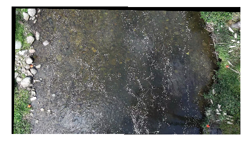

1.69m³/s ± 0.86 m³/s
Measured 100.00 %
Sections 1
Technique LSPIV
Stations 15
Lens DJI_Mavic_3
Stabilized 2 regions
Frame step 2
Resize 0.5
CS_default_1
LSPIV
1.69 ± 0.86 m³/s
100.00 % measured · 0.00 % interpolated · 15 stations · α 0.85
LSPIV 1.69 m³/s · reportedSTIV 5.82 m³/siWave 5.01 m³/s

Section line and LSPIV vectors. Left bank red, right bank green.
How this was measured
Pixel size (GSD) 0.01234 m/px
Reference length 4.20 m
Point xpx ypx Xm Ym
1 412.00 388.50 0.00 0.00 2 1310.25 402.00 4.20 0.00
Footage
File DJI_0042.MP4
Video 3840 × 2160 · 29.97 fps · 00:01:12
Recorded 2026-09-14 10:22
Processed 00:00:10 → 00:00:30 · step 2 · 66.73 ms
Resize 0.5
Lens DJI_Mavic_3
Stabilization: 2 regions on the first frame
Across the processed range
00:00:10
00:00:15
00:00:20
00:00:25
00:00:30
Processing
LSPIV Grayscale yes
CLAHE clip limit 5.00
Window sizes 128 | 64 px
Std filter threshold 4.00
Median test ε 0.02 · threshold 2.00
Seeding artificial
STIV Model CNN, weights doi:10.5281/zenodo.22050810
Further parameters are not recorded in this version.
iWave Parameters are not recorded in this version.
Generated with RIVeR 3.2.0 on 2026-10-02 17:24 · github.com/oruscam/RIVeR